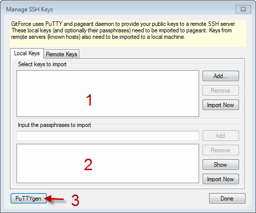
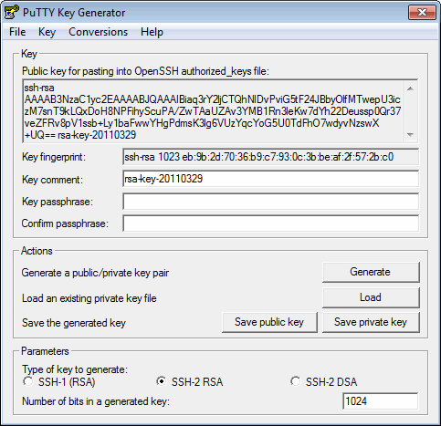
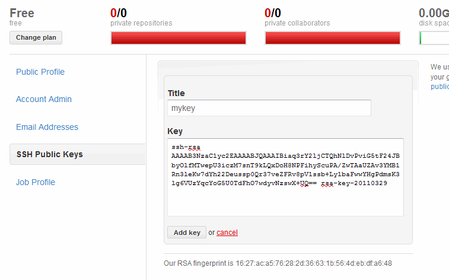
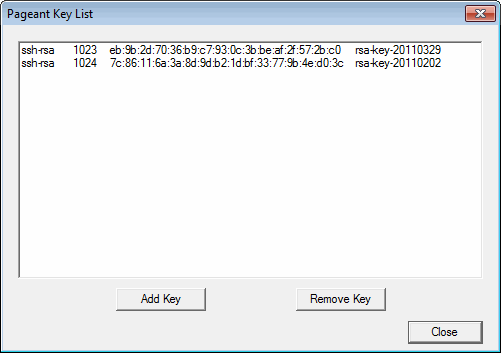
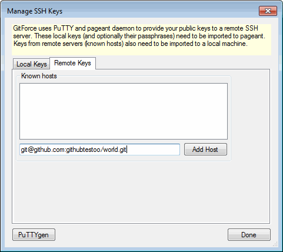

GitForce uses PuTTY daemon and PLINK proxy to manage SSH keys for git commands. This tutorial assumes you are setting up a github project, but the same principle should apply with other SSH servers.
Click on the "Settings" -> "Manage SSH Keys..." to open up a SSH dialog (you can also click on the icon of keys on the main app toolbar).

If you don't have your own key, you need to create it.
Click on the PuTTYgen (marked as "3") to start a PuTTY generation utility. Click on the "Generate" and move your mouse as the key is being generated, after which you should see your public key ready:

Click on "Save private key" and save the complete key pair onto your local drive (its extension should be *.PPK). We will need that file in a later step.
Select all text from the public key control (starting with "ssh-rsa...") and copy it... into the github: "Account Settings" -> "SSH Public Keys" as illustrated here:

Go back to the SSH dialog and see "Select keys to import" listbox (marked above as "1"). Keys listed there will be auto-loaded next time you start GitForce. We want to add our key to this list. That's the key we saved in a step above.
Click on the "Add..." next to the "Select keys to import" and navigate to the key you saved (its extension should be *.PPK).
Click on "Import now" to actually import this key into the Pageant. If you open Pageant (by double-clicking on the icon of a computer with a hat in your OS status bar), you should see a key being added.

The last thing we need to do is to add github's public key to our list of known hosts. Open the SSH dialog again and select the "Remote Keys" tab (as opposed to "Local Keys" tab which we used this far). Paste your project's SSH address and click on the "Add Host".

You should see github's SSH information added to the list of known hosts:
You are ready to push/pull to your project now using the SSH protocol.